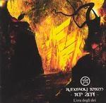

| Artist: | Runaway Totem |
| Title: | Tep Zepi (L'Era Degli Dei) |
| Label: | Musea FGBG 4465 |
| Length(s): | 55 minutes |
| Year(s) of release: | 2002 |
| Month of review: | [03/2003] |
| 1) | Aurea Carmina | 4.52 |
| 2) | Sacro Re | 7.56 |
| 3) | Pardes | 6.44 |
| 4) | Iperborea | 11.40 |
| 5) | Montsalvat | 6.14 |
| 6) | I 4 Signori - L'Isola Sacra | 5.16 |
| 7) | I 4 Signori - I Guardiani | 5.44 |
| 8) | I 4 Signori - Akasha | 6.26 |
Sacro Re starts the theme more rocky, with strong guitar and keys. This moves on to a more devout sounding section, carried by church organ, and military drum. After this intro, taking up more than half of the track, the carried voice returns. The track is finished with strong guitar.
Pardes starts with complex riffs & rhythms, to quickly move on to a key section dominated by sampled voices. The middle section is dominated by a guitar solo, leading to a closing with the return of the keys.
Iperborea features vocals that move more towards regular singing, although the strength of Cahal de Betel's voice is apparent. The keys and guitars once again dominate most of the track, supported by enchanting drum rhythms and military rolls. The middle section is led in by piano, later supported by synth and a rather sharp sounding guitar. Double voiced chanting takes us towards the closing, dominated once again by the sharp guitar sound.
Montsalvat opens with high pitched sampled vocal keys, leading into a guitar line. The synths are more melodious, less supporting here.
The threepiece I 4 Signori stars with a slow telling intro, preparing for the dramatic vocals. Despite containing both and guitars, opener L'Isola Sacra appears to be less a wall of sound than the other tracks. I Guardiani is dominated by a guitars sound somewhat more technical than that on the other tracks, although it does see some vocals as it moves on. The synths in especially this second part sometimes show themselves to be as artificial as they are a bit too clearly. Closing part Akasha adds some dramatics to give a fitting closer.